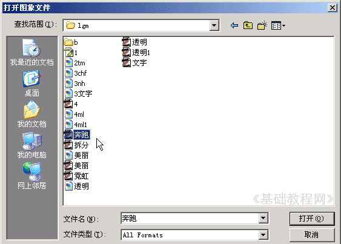
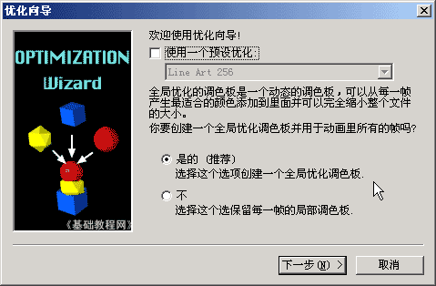
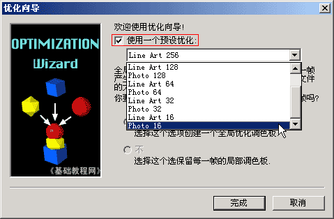
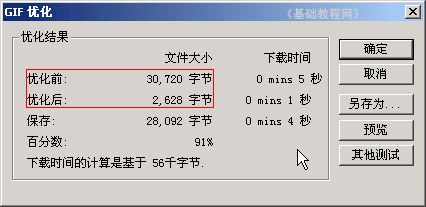

Ulead Gif Animator 基础教程
八、优化向导 返回
在Ulead GIF中还有一个功能，可以对动画进行优化后输出，这样便于网络播放和传输，下面我们来看一个练习；
1、运行程序
1）在桌面双击Ulead Gif Animator图标，或者在文件夹中双击它的图标，就可以启动程序；
2）启动成功后，显示一个默认的空白文档，如果出现向导提示，点“关闭”；
2、优化动画
1）点菜单“文件－打开图像..”命令，找到上节课做的动画“奔跑”，点击打开；

2）再点菜单“文件－优化向导..”命令，出来一个对话框，把上面的“使用预设”打勾选中，简单的可以直接用；

3）把上面的“使用预设”打勾选中，点一下右边的下拉按钮，在弹出的下拉列表中，选下边的“photo 16”，颜色少一些；

4）然后点“完成”，出来一个对话框面板，里面有优化前后的文件大小对比，可以发现有很大差别；

5）点右边的“另存为..”按钮，以“奔跑1”为文件名保存文件到自己的文件夹中，然后点“确定”按钮完成优化；
本节学习了优化动画的基本方法，通过优化可以大大减少图片的体积，一般我们都用它来发布图片，如果你成功地完成了练习，请继续学习下一课内容；
本教程由86团学校TeliuTe制作|著作权所有转载和引用本站内容，请保留版权信息和本站链接。